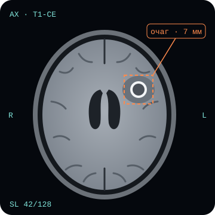

Мелкие очаги
Метастазы размером в несколько миллиметров легко потерять среди сотни срезов одного исследования.
// дипломный проект · 2026
NeuroScan — учебный сайт о технологии интеллектуального анализа МРТ-снимков головного мозга: от сырых срезов до отчёта с найденными очагами.

Одно МРТ-исследование — это сотни срезов в нескольких режимах. Подробнее о режимах съёмки — на странице «МРТ».
Метастазы размером в несколько миллиметров легко потерять среди сотни срезов одного исследования.
Модель заранее отмечает подозрительные области, и радиолог проверяет их, а не ищет с нуля.
Автоматический подсчёт числа и объёма очагов помогает сравнивать исследования до и после лечения.
На лабы не смотрят, их делают.